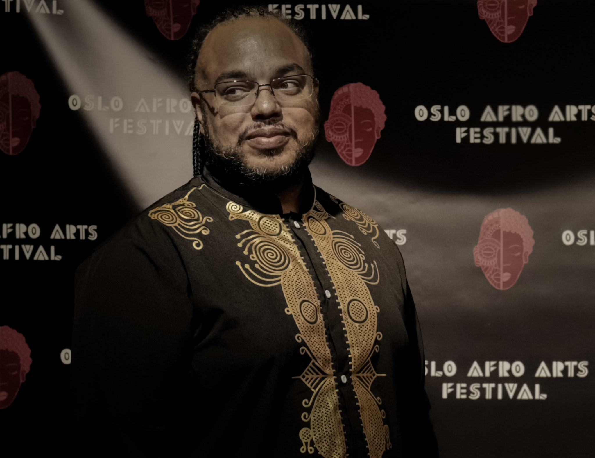

SEPTEMBER, 20, 2021
Thomas Talawa Prestø Sets the Stage on Africana Dance
Photos by André Percey Katombe
- words by Ka Man Mak
Edited by Michael Adadek
At the Oslo Afro Arts Festival, choreographer, lecturer, founder and
artistic director of Tabanka African and Caribbean Peoples Dance
Ensemble, Thomas Talawa Prestø sets the stage. Imbued in his lecture
was a conscious effort to educate embedded colonial concepts in
academia, philosophy and dance.
“Because this is complex. Extremely complex,” started Thomas Talawa
Prestø charismatically, hopping between Norwegian and English. “And
I acknowledge that.” His slides were deliberately text heavy so that
the audience could take photos and revisit the topic again. “For me,
it has started to become an everyday [sic]. I realised how complex
this was, especially for the Norwegian institutions and when I was
applying for the doctorates. Because I said that my project would
have to be intersectional. It would have to look at the intersection
of gender and race, and also on forced migration and voluntary
migration. The response I got was, “that’s a lot”, you should choose
a few.”
Intersectionality was coined in 1989 by professor Kimberlé Williams
Crenshaw who studies civil rights, race and racism. For her,
intersectionality is used to describe how race, class, gender, and
other individual characteristics intersect with one another and
overlap.
Prestø refused to hem in on the complexity of African art, dance,
philosophy and culture; and oftentimes explained terminologies that
might be unfamiliar to the audience. His lecture visited scholars,
African concepts, dance comparisons and historical events to
illustrate how we are being lied to on a daily basis; and how
African aesthetics should be understood in academia, history, art
and dance.
African dance is parallax
One of his decolonial dance performances, Jazz Ain’t Nothing But
Soul, a collaboration with Dansens Hus and Tabanka, was broadcast
digitally during April to May this year. Jazz, like many dance
forms, has been appropriated by the West, and has roots in Africa.
“We returned to a lot of the art practices which are uniquely
African in its roots. And also translated into the camera as all the
cameras were moving around the dancers. We are continuously dancing
within a sphere, not a circle.”
Using this project, he illustrated how African dance is a parallax,
that “how something looks depends on where you stand in relationship
to it. So, as you change your perspective just a little bit, the
shape and form of it will change. One of the results of having the
audience all around you is that you move your body in a way that is
parallax.”
Africana Dance includes any dance practices, that is contemporary or
altered, from people who are of African descent and carries African
philosophy or thought and culture into their daily practices. This
includes the African diaspora.
“Dancing in the pressure-cooker”
Prestø introduced his doctorate research project, titled ‘Anansi’s
web’. Anansi comes from a West African folktale character where he
takes the shape of a spider, and is considered as a spirit or god
who is a trickster. Anansi is also given the “principle of
communication and storytelling by the God”. The stories about Anansi
became mainstream in the American version, Brer Rabbit and Bugs
Bunny. It is believed that Brer Rabbit stories originated from
enslaved West Africans in America and were appropriated by Joel
Chandler Harris in the 19th century.
Anansi’s web is an artistic research project which engages and
supports Africana dance practitioners in Norway. In particular, the
project looks at “Dancing in the pressure-cooker” which Prestø
coined to describe “dance practices that spring from people in a
pressured situation, such as enslavement, segregation, apartheid,
forced migration, war, homophobia, transphobia and gender
injustice”. One of the goals of the project is to “disrupt the
hegemony of Europeanist theory”.
“Things are not what they seem, especially when you touch on the
diaspora, it is very often not what they seem. All too often when
you do research, the research material is racist, sexist, and is
based a lot on what the researcher recognises. […] It is actually
quite violent to read about it.”
He went further, “Most writings about Caribbean or African-Caribbean
dance started in criminology because the dance was predominantly
spiritual, or spiritually oriented, and so it was illegal to
practise African drumming. […] There is very little neutral material
about the field that I am in.”
Through Western ethnocentric perspectives, it would be difficult to
truly grasp African art and culture, he cautioned.
Prestø used the term, ‘Euro-Western’ instead of western as he sees
himself as a descendent of Africans that are taken forcefully from
Africa to the Caribbean and to the Americas over 500 years ago. He
refused to give away ‘Western’ as though that Africans did not
contribute to it. ‘Western’ is not equivalent to ‘White’ or
‘European’, he explained and admitted that there might be a need for
a better terminology.
The Language That Hides the Brutal Truth
Prestø’s highlighted euphemism used by researchers, such as ‘to
colonise’ hides the brutal violence of the invaders into a country.
He used the indigenous Caribbeans, Taino, as an example that in
their point of view, who are now almost killed off due to
colonisation, would have viewed it as an invasion. “We are already
doing politricks. We are already hiding what we are talking about
and in most incidents, we are talking about war. I have to leave
that clear otherwise it would be indefensible for me to continue.
The Caribbean was a site of war. America was a site of war. South
Africa was a site of war.”
On the screen, he showed two definitions:
Colonalism refers to the historical experience of domination that
coincided with the colonial enterprise, typically traced to the
period between the 18th to 20th centuries.
Coloniality is an epistemic concept that finds its origins in the
15th century discovery of the ‘New World’ which dominates and
controls subsequent modes of knowledge production through codifying
differences between the civilised West and the underdeveloped Rest.
Prestø further explained that, “What that means is that we started
to change education. We start to change storytelling. We started to
fabricate our view of ourselves and the view of the rest, so-called
othering. […] So, we are civilised, we are highly cultured, but they
are dumb and savages. Therefore, we must dominate them. We must take
their land. we must take their women.”
Below is a list that Prestø created to highlight which words are
hiding the brutal truth:
Colony = invaded country
Colonialisation = war
Slaves = hostages
Slave owners = human traffickers
Slave catchers = police
Plantation = death camps
Mistresses = rape victims
Overseers = torturers
Trading = kidnappers
Profit = theft
He then rewrote a passage that initially read, “Slave families lived
on plantations owned by white slaveowners who hired overseers to
maintain discipline,” to “Black families were held hostage in death
camps by white human traffickers who employed torturers to torture
and kill them.”
“We need to start there, to understand how much we are hiding in our
everyday talk.” The recent ‘blackface’ debate in Norway was an
example of how Norwegians were ridiculing “blacks at death camps”,
and he called the discussion “dumb”, “absurd”, and “undignifying”.
Academic accountability: Shifting the Geography of Reason
“If you don’t apply decolonial perspectives in your research on
Africana Dance you will reach less than 60 years back in time, and
most of what you glean will be “corrupted” information,” warned
Prestø.
The origin of the concept of “shifting the geography of reason” was
born out of a dialogue between the Department of Africana Studies at
Brown University, the Institute for Caribbean Thought in Jamaica,
and the Africana Thought series at Routledge in the late 1990s on
the decolonial thought movement. It is also the motto of the
Caribbean Philosophical Association.
Shifting the geography of reason is to change the historical
perpetuation that Africans are non-intellectuals, and thus were
denied the capacity to produce knowledge and to have rational
thought. When such bias, especially in the context of Western
philosophy, is so prevalent it has dire consequences for our society
and education.
“Euro-Western believes that they own reason. Therefore, this
pertains in art,” said Prestø. Speeding through he highlighted how
the map of Africa is unnaturally constructed and distorted in the
commonly used Mercator’s world map in classrooms, where Africa is in
fact much larger. Africa as a continent has its own diverse cultures
and had kingdoms with their own trade, libraries and universities in
pre-colonial times.
Prestø used examples of “Fulani” languages and “Bantu” culture to
illustrate African diversity. Fulani language group is from the
Niger-Congo family, with its dialects being are spoken across 22
countries in West and Central Africa. It is also spoken from Senegal
and in Sudan too. There are about 20-30 million Fulani speakers
across Africa. Despite their dialects, for Prestø, they are all part
of the same “rhythmic culture” and can communicate with each other.
African drums, also known as talking drums, were outlawed in the
colonies because of their ability for the enslaved to communicate.
The importance of understanding cultural structures, in particular,
is to get the right solutions for example working with African
youth, “Rather than trying to assimilate somebody for drug
prevention, you can actually look at what you have in your own
culture that could work as drug prevention and start there. It’s a
lot easier.” Prestø worked with African youth in Norway.
Rhythm is Communication. Time is Relational.
The main philosophy in most parts of Africa is polycentricity, where
everyone is important and can influence in the same space. This has
a consequence in art. Polyrhythm comes from polycentricity.
Polyrhythm is multilayers of voices, which Prestø described in a
social context, African aunts talking at the same time where one
aunt can be talking about two different things. It does not mean
that in that space one aunt can be bigger than the other or louder
than the other, but rather the other aunt would also need to be
bigger and louder as well. The idea of “your turn to speak after my
turn to speak” does not resonate in the African culture.
Individuality is then seen as being established and found in a
group, and “Difference does not communicate less value.” Ubuntu, is
an ancient African word and philosophical concept to mean “I am
because we are” which underpinned African culture.
Rhythm is to be understood as a core way of communication. Most of
the dances and songs are based on cosmology, which is why he titled
his lecture as ‘Assuming the Centrality of an Africana Cosmos –
Beyond Coloniality.’ Dance is then seen as a way to communicate to
the universe and is considered as “the highest form of
communication.”
Skills in listening, creation and tracing is important to master the
rhythms in African dance, and once again he emphasised that the
euro-western notation system in music is not “capable of notating
polyrhythms correctly.”
When talking about the dancer’s body, Thomas refused to use the
term, ‘black bodies’ as this is where you are only black in the
presence of whiteness. “If you let the whiteness become the norm, so
that you have to define you are black, it’s like saying black South
Africans. Why do you have to say that? It is because of the force in
the room.”
In the African perspective, the human body is seen as so exquisite
that even the gods want it. In a voodoo ritual dance, an exchange
occurs when the divine spirit enters and rides the body; for lending
the body, the spirit leaves healing and knowledge to the community.
Rhythm is also seen as the making of time. Prestø raised the
question of how and who defined time itself, “Who says that the half
time of an atom in Geneva dictates what a second is? […] How long is
an hour? Let’s say from an experimental point of view. It could feel
like five minutes. Hours can feel like a week. Now with corona, who
knows what day it is?”
“Time is relational, so are polyrhythms. It teaches us how to stand
in time, and it also teaches us not to try and control it. It
collapses time. So, the drum often teaches us who we were, who we
are, and who we can become. It takes three spirits to beat the drum
– the ancestral tree, that was taken to make the wood; the animal
that was sacrificed to make the skin, and the human who beats it in
the moment. Past, Present and Future have to be present for the drum
to sound.”
Thomas Talawa Prestø is the founder and art director of Tabanka
African and Caribbean Peoples Dance Ensemble, which has won awards,
such as OXLO-prisen 2017 and Bergesenprisen 2020.
This article is part of a journal series produced by The Oslo Desk in collaboration with Oslo Afro Arts Festival.